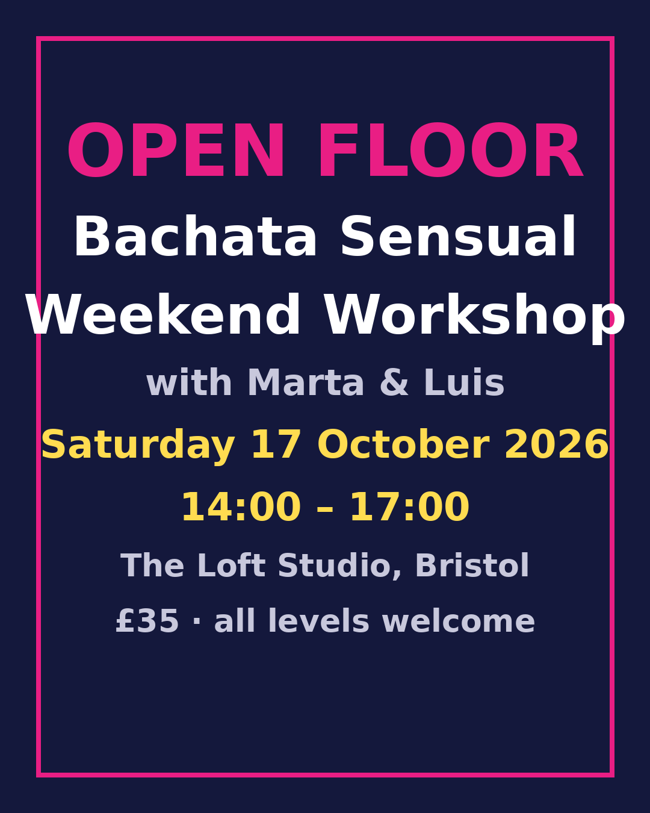

Social dance classes and socials in Bristol · salsa · bachata
All classes are at The Loft Studio, 12 Stokes Croft, Bristol BS1 3PR. Drop in £10, or a 6-week course £50. No partner needed.
Cuban-style salsa from scratch. Basic steps, timing, first turns. Suitable for complete beginners.
For dancers with a term or two of bachata. Musicality, body movement and partner work.

Three hours of technique, musicality and connection with guest teachers Marta & Luis. Places limited to 30.
Email openfloor@activescene.org · Instagram @openfloorbristol
Monthly social
Open Floor Social
Saturday 26 September 2026, 20:00–23:30 · The Loft Studio · £8 on the door
Salsa, bachata and a little kizomba. 30-minute taster class at 20:00, then open dancing until late.